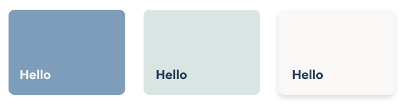

Objective 1 : Improve Information Architecture
Competitive Analysis
I worked alongside the growth lead, Bucky, to analyze the homepages of direct and adjacent competitors of Jack Health. We wanted to understand different sections that are valuable to the user.
Viewing their homepage rather then their consultation page helps us recognize which major sections on the websites
Key Takeaways
- Not all websites offer free consultations
- Telehealth websites commonly include these sections:
-
How it Works
-
Social Proof
-
Reviews
Objective 2 : Redesign Interface and Design Structure
Jack Health Branding
Jack Health’s new identity is minimal and fun. It uses more product and portrait images with positive, pointed messaging.
Colours and lighter and use more earthly tones, while the packaging is bright and cheerful.
I used the packaging mockups to create a colourful and fun element and stay consistent to the other pages.
I created a few iterations on how I wanted to lay out the buttons.
Hierarchy
Text on the left allows the header to be larger and more comprehensive. The fact that medical consults are completely free should be emphasized.
Contrast
This dark blue and light beige hold higher contrast compared to the colour combinations of the earlier button iterations
